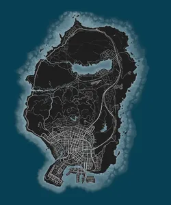
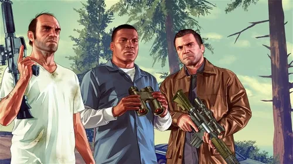

Descripción del Juego
"Grand Theft Auto V" (GTA V) es un juego de acción y aventura desarrollado por Rockstar North y publicado por Rockstar Games. Lanzado en 2013 para consolas de la generación pasada y posteriormente para PC, el juego se ha convertido en uno de los títulos más vendidos y aclamados de la historia de los videojuegos.
Ambientado en la ficticia ciudad de Los Santos, GTA V ofrece a los jugadores un mundo abierto expansivo donde pueden explorar, interactuar y participar en una gran cantidad de actividades y misiones.
Modos de Juego
GTA V ofrece una experiencia de juego diversa que incluye:
- Campaña: Los jugadores pueden seguir la historia de tres personajes jugables principales: Michael, Franklin y Trevor, cada uno con su propio trasfondo y habilidades, mientras realizan misiones y actividades en la ciudad de Los Santos y sus alrededores.
- Mundo Abierto: Los jugadores pueden explorar libremente el mundo abierto, participar en actividades como golf, tenis, carreras, comprar propiedades y vehículos, y realizar actividades delictivas como atracos.
- Modo Online: GTA Online permite a los jugadores interactuar en línea, formar bandas, realizar misiones y competir en diversas actividades con otros jugadores de todo el mundo.
Personajes y Mundo
El juego presenta una amplia gama de personajes memorables y un mundo detallado que refleja la vida urbana y la cultura de Los Ángeles. Desde figuras criminales hasta políticos corruptos y celebridades, GTA V presenta una sociedad diversa y a menudo satírica.

Personajes Principales
Michael De Santa: Un ex ladrón de bancos que ingresa en el programa de protección de testigos, tratando de equilibrar su vida familiar con sus inclinaciones criminales.
Franklin Clinton: Un joven y ambicioso ladrón de coches que busca oportunidades para ascender en el mundo criminal.
Trevor Philips: Un psicópata errático y violento con habilidades excepcionales en piloto y aviador.

Personajes Secundarios
GTA V cuenta con una amplia variedad de personajes secundarios, desde aliados leales hasta enemigos despiadados. Estos personajes contribuyen a la trama y al rico tejido del mundo del juego.

Vehículos y Armas
GTA V ofrece una amplia variedad de vehículos, desde coches deportivos hasta aviones y embarcaciones. Además, los jugadores pueden acceder a un extenso arsenal de armas que van desde pistolas hasta lanzacohetes.

Actividades Secundarias
Aparte de las misiones principales, los jugadores pueden participar en diversas actividades secundarias como carreras, deportes, actividades acuáticas y mucho más, lo que añade profundidad y variedad a la experiencia de juego.
Recepción y Éxito
GTA V ha sido elogiado por su vasto mundo, narrativa emocionante, jugabilidad innovadora y atención al detalle. Ha recibido numerosos premios y ha batido récords de ventas, convirtiéndose en uno de los juegos más exitosos de todos los tiempos.